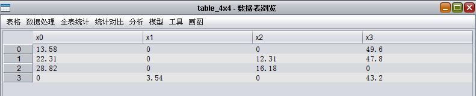
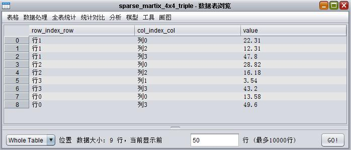
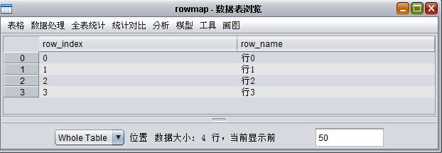
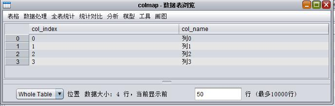
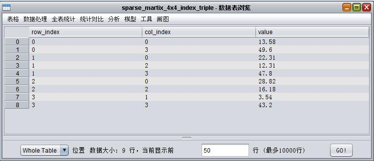
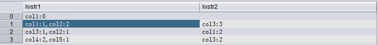
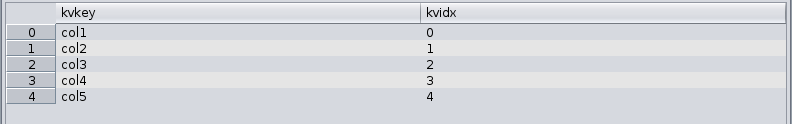
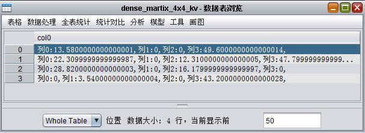
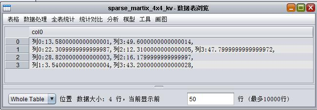
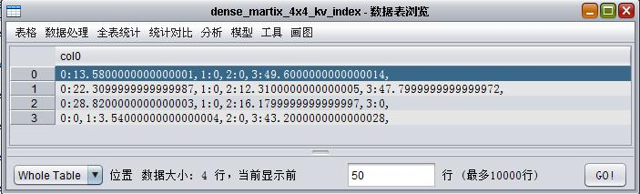

基本概念¶
XLab涉及这些概念：表(table)和分区(partition)、XLib稠密矩阵表、XLib稀疏矩阵表、三元组表、索引三元组表、KV表、索引KV表、表达式和脚本语言。本章节将简要介绍这些概念。
表(table)、XLib稠密矩阵表、XLib稀疏矩阵表、三元组表、索引三元组表、KV表和索引KV表，这些表间可以相互转换，XLab提供了转换界面和函数，详见”格式转换”章节。
表和分区¶
XLab/XLib中提到的表(table)和分区(partition)均是指ODPS的表(table)和分区(partition)。
示例，表(Table)table_4x4，4行4列，如下图：
XLib稠密矩阵表¶
稠密矩阵是指非0元素占所有元素比例较大的矩阵。XLib稠密矩阵表是指存储稠密矩阵的Odps表。我们用四个分区来对其进行定义和描述XLib稠密矩阵表。XLib稠密矩阵表，包括四个分区：
- matrixconf：矩阵类型为1，代表稠密矩阵；
- matrixdata：按先行后列存储全部数据；
- matrixrow：空；
- matrixcol：空。
示例，XLib稠密矩阵表table2dense_martix_4x4(与表table_4x4对应)：
- matrixconf：矩阵类型为1，代表稠密矩阵，如下图：
- matrixdata：按先行后列存储全部数据，如下图：
- matrixrow：空，如下图：
- matrixcol：空，如下图：
Xlib稀疏矩阵表¶
稀疏矩阵是指非零元素的个数远远小于矩阵元素的总数，并且非零元素的分布没有规律的矩阵。XLib稀疏矩阵表是指存储稀疏矩阵的Odps表。XLib稀疏矩阵表包括四个分区：
- matrixconf：矩阵类型为3，代表稀疏矩阵；
- matrixdata：按先行后列存储全部数据；
- matrixrow：存储每一行的开头在matrixdata文件里的偏移；
- matrixcol：存储matrixdata文件里每个非零元素的列指标。
示例，table2sparse_martix_4x4(与表table_4x4对应)：
- matrixconf：矩阵类型为3，代表稀疏矩阵，如下图：
- matrixdata：按先行后列存储全部数据，如下图：
- matrixrow：存储每一行的开头在matrixdata文件里的偏移，如下图：
- matrixcol：存储matrixdata文件里每个非零元素的列指标，如下图：
三元组表¶
三元组表是用三元组的形式表示稀疏矩阵，三元组表一共有三列，分别表示行，列，值。其中值的类型为Double或Long。 例如表示(用户，电影，打分)， 数据应该是(“小明”，”肖申克”， 9)。
示例，三元组表sparse_martix_4x4_triple(与XLib稀疏矩阵表table2sparse_martix_4x4)，存储的是稀疏矩阵的非零元素的行名、列名及值，如下图：
行名与行下标的映射表rowmap，它共两列，存储行下标与对应的行名，如下图：
列名与列下标的映射表colmap，它共两列，存储列下标与对应的列名，如下图：
索引三元组表¶
索引三元组表是三元组表的一种特殊形式，如果三元组表中行和列是索引，则是索引三元组表。 索引三元组表的类型是(Long， Long， Double|Long)，其中行索引和列索引的小标都是从0开始的。例如(用户id， 电影id， 打分)，数据格式是(1, 12， 9)。
示例，索引三元组表sparse_martix_4x4_index_triple(与XLib稀疏矩阵表table2sparse_martix_4x4相对应)，存储的是稀疏矩阵的非零元素的行下标、列下表以及非零值，如下图：
KV表¶
KV表是表里每个数据字段格式都是key：value，key：value…的形式，其中key，value之间的分隔符和多对KV之间的分隔符可以自定义。key是指列名，value是指存储在该行key列的元素值。
- KV表的列可为单列，也可为多列，同一行，各列的KV对不能重复。
- 对于一个KV表，需要有相对应的map表才能完整的表示这个数据。
map表有以下特征：
- 由两列组成，一列为string类型，表示列名。另一列为bigint类型，表示列号。
- 和kv表成对出现。
- map表中的列名对应于KV表中的key。
示例1：KV对
col1:1 col2:2 col3:3
- col1、col2、col3是key，代表列名。
- 1、2、3是value，代表key对应的值。
示例2：KV表
KV表为两列kvstr1，kvstr2的示例，如下图：
选中单元格的数据(col1:1,col2:2)说明：
- KV对是由,分割；
- col1:1代表第1行col1列的值为1；
- col2:2代表第1行col2列的值为2。
和KV表中例子对应的map表为：
KV表加上map表即可表示一个完整的矩阵，组合KV表和map表中的两个例子，矩阵为：
col1 col2 col3 col4 col5 0 0 0 0 0 1 2 3 0 0 2 1 1 0 0 0 0 2 2 1
示例3，KV表dense_martix_4x4_kv(与XLib稠密矩阵表table2dense_martix_4x4和列下标列名映射表colmap相对应)，如下图：
选中单元格元素：列0:13.5800000000000001,列1:0,列2:0,列3:49.6000000000000014, 代表第0行的四列元素，KV对间用,分割。列0:13.5800000000000001代表一个KV对，key为列0，value为13.5800000000000001，这个KV对代表第0行的列0列的值为13.5800000000000001。
示例4，KV表sparse_martix_4x4_kv(与XLib稀疏矩阵表table2sparse_martix_4x4和列下标列名映射表colmap相对应)，如下图：
索引KV表¶
KV表里如果key是索引id，则是索引KV表。索引KV表不需要对应map表。
示例1，索引KV对：
1:ab 2:bc 3:cd
- 1、2、3是key，代表列下标。
- ab、bc、cd是value，代表key对应的值。
示例2，索引KV表dense_martix_4x4_kv_index(与XLib稠密矩阵表table2dense_martix_4x4相对应)，如下图：
选中单元格元素：0:13.5800000000000001,1:0,2:0,3:49.6000000000000014, 代表第0行的四列元素，KV对间用,分割。 0:13.5800000000000001代表一个KV对，key为0，value为13.5800000000000001，这个KV对代表第0行的第0列的值为13.5800000000000001。
示例3，索引KV表sparse_martix_4x4_kv_index (与XLib稀疏矩阵表table2sparse_martix_4x4对应)，如下图：

表达式¶
Xlab提供了一些表达式与函数，方便用户在脚本和界面中使用，包括:
IN,RLIKE,LIKE,+,-,*,/,%,^,=,==,!=,<>,IS NULL,IS NOT NULL , <, <=, >, >=, &&, AND, ||, OR, !, NOT, +, -,&,|,<<,>>,reverse(),log(),sqrt(),abs(),trim(),length(),lengthb(),char_matchcount(),chr(),is_encoding(),keyvalue(),md5(),get_idcard_age(),get_idcard_birthday(),get_idcard_sex(),regexp_extract(),regexp_instr(),regexp_replace(),regexp_substr(),regexp_count(),split_part(),tolower(),toupper(),to_char(),log10(),sin(),cos(),tan(),cot(),asin(),acos(),atan(),acot(),ceil(),floor(),round(),trunc(),isdate(),instr(),left(),right(),repeat(),substr(),replace(),insert(),concat(),cast(),dateadd(),datediff(),datepart(),datetrunc(),from_unixtime(),lastday(),getdate(),unique_id(),uuid(),to_date(),unix_timestamp(),weekday(),weekofyear(),decode(),conv(),cosh(),sinh(),tanh(),exp(),rand(),ln()
表达式及函数的使用说明，详见附录。
脚本语言¶
我们使用Python作为脚本语言，详细说明可参考Python的简明教程。
这里我们摘要列出最基本的内容，方便用户快速入门。
- 注意事项：
- 任何在#符号右面的内容都是注释。
字符串¶
- 使用单引号(‘)
你可以用单引号指示字符串，就如同’Quote me on this’这样。所有的空白，即空格和制表符都照原样保留。
- 使用双引号(”)
在双引号中的字符串与单引号中的字符串的使用完全相同，例如”What’s your name?”。
- 使用三引号(‘’‘或”“”)
利用三引号，你可以指示一个多行的字符串。你可以在三引号中自由的使用单引号和双引号。
示例：
'''This is a multi-line string. This is the first line.
This is the second line.
"What's your name?," I asked.
He said "Bond, James Bond."
'''
- 转义符 假设你想要在一个字符串中包含一个单引号(‘)，那么你该怎么指示这个字符串？例如，这个字符串是What’s your name?。你肯定不会用’What’s your name?’来指示它，因为Python会弄不明白这个字符串从何处开始，何处结束。所以，你需要指明单引号而不是字符串的结尾。可以通过 转义符 来完成这个任务。你用’来指示单引号——注意这个反斜杠。现在你可以把字符串表示为’What’s your name?’。
- 另一个表示这个特别的字符串的方法是”What’s your name?”，即用双引号。类似地，要在双引号字符串中使用双引号本身的时候，也可以借助于转义符。另外，你可以用转义符\来指示反斜杠本身。
- 在一个字符串中，行末的单独一个反斜杠表示字符串在下一行继续，而不是开始一个新的行。
示例：
"This is the first sentence.\
This is the second sentence."
等价于
"This is the first sentence. This is the second sentence."
标识符的命名¶
变量是标识符的例子。 标识符 是用来标识 某样东西 的名字。在命名标识符的时候，你要遵循这些规则：
- 标识符的第一个字符必须是字母表中的字母(大写或小写)或者一个下划线(‘ _ ’)。
- 标识符名称的其他部分可以由字母(大写或小写)、下划线(‘ _ ’)或数字(0-9)组成。
- 标识符名称是对大小写敏感的。例如，myname和myName不是一个标识符。注意前者中的小写n和后者中的大写N。
- 有效 标识符名称的例子有i、__my_name、name_23和a1b2_c3。
- 无效 标识符名称的例子有2things、this is spaced out和my-name。
变量¶
我们看一下如何使用变量和字面意义上的常量。
示例：
# Filename : var.py
i = 5
print i
i = i + 1
print i
s = '''This is a multi-line string.
This is the second line.'''
print s
输出
5
6
This is a multi-line string.
This is the second line.
下面来说明一下这个程序如何工作。首先我们使用赋值运算符(=)把一个字面意义上的常数5赋给变量i。这一行称为一个语句。语句声明需要做某件事情，在这个地方我们把变量名i与值5连接在一起。接下来，我们用print语句打印i的值，就是把变量的值打印在屏幕上。 然后我们对i中存储的值加1，再把它存回i。我们打印它时，得到期望的值6。
类似地，我们把一个字面意义上的字符串赋给变量s然后打印它。
注意事项：
- 使用变量时只需要给它们赋一个值，不需要声明或定义数据类型。
逻辑行与物理行¶
物理行是你在编写程序时所看见的。逻辑行是Python看见的单个语句。Python假定每个物理行 对应一个逻辑行。 逻辑行的例子如print ‘Hello World’这样的语句——如果它本身就是一行(就像你在编辑器中看到的那样)，那么它也是一个物理行。 默认地，Python希望每行都只使用一个语句，这样使得代码更加易读。
若要在多个物理行中写一个逻辑行，可以使用反斜杠。
示例：
s = 'This is a string. \
This continues the string.'
注意事项：
- 如果你想要在一个物理行中使用多于一个逻辑行，那么你需要使用分号(;)来特别地标明这种用法。分号表示一个逻辑行/语句的结束。
控制流¶
在Python中有三种控制流语句——if、for和while。
if语句¶
使用if语句的示例：
number = 23
guess = 12
if guess == number:
print 'Congratulations, you guessed it.' # New block starts here
print "(but you do not win any prizes!)" # New block ends here
elif guess < number:
print 'No, it is a little higher than that' # Another block
# You can do whatever you want in a block ...
else:
print 'No, it is a little lower than that'
# you must have guess > number to reach here
注意事项：
- 我们使用了缩进层次来告诉Python每个语句分别属于哪一个块。这就是为什么缩进在Python如此重要的原因。我希望你能够坚持”每个缩进层一个制表符”的规则。
- if语句在结尾处包含一个冒号——我们通过它告诉Python下面跟着一个语句块。我们在这里使用的是elif从句，它事实上把两个相关联的if else-if else语句合并为一个if-elif-else语句。elif和else从句都必须在逻辑行结尾处有一个冒号，下面跟着一个相应的语句块(当然还包括正确的缩进)。
while语句¶
只要在一个条件为真的情况下，while语句允许你重复执行一块语句。while语句是所谓 循环 语句的一个例子。
示例：
number = 23
guess = 12
running = True
while running:
guess += 1
if guess == number:
print 'Congratulations, you guessed it.'
running = False # this causes the while loop to stop
elif guess < number:
print 'No, it is a little higher than that'
else:
print 'No, it is a little lower than that'
print 'Done'
for循环¶
for..in是另外一个循环语句。在C/C++中，如果你想要写for (int i = 0; i < 5; i++)，那么用Python，你写成for i in range(0,5)。
示例：
for i in range(1, 5):
print i
输出
1
2
3
4
break语句¶
break语句是用来 终止 for或while循环语句的，即哪怕循环条件没有称为False或序列还没有被完全递归，也停止执行循环语句。
continue语句¶
continue语句被用来告诉Python跳过当前for或while循环块中的剩余语句，然后 继续 进行下一轮循环。
函数¶
函数是重用的程序段。它们允许你给一块语句一个名称，然后你可以在你的程序的任何地方使用这个名称任意多次地运行这个语句块。这被称为 调用 函数。
函数通过def关键字定义。def关键字后跟一个函数的 标识符 名称，然后跟一对圆括号。圆括号之中可以包括一些变量名，该行以冒号结尾。接下来是一块语句，它们是函数体。
示例：
def sayHello():
print 'Hello World!' # block belonging to the function
sayHello() # call the function
参数在函数定义的圆括号对内指定，用逗号分割。当我们调用函数的时候，我们以同样的方式提供值。
示例：
def printMax(a, b):
if a > b:
print a, 'is maximum'
else:
print b, 'is maximum'
printMax(3, 4) # directly give literal values
x = 5
y = 7
printMax(x, y) # give variables as arguments
输出
4 is maximum
7 is maximum
return语句用来从一个函数返回即跳出函数。我们也可选从函数返回一个值。
示例：
def maximum(x, y):
if x > y:
return x
else:
return y
print maximum(2, 3)
输出
3